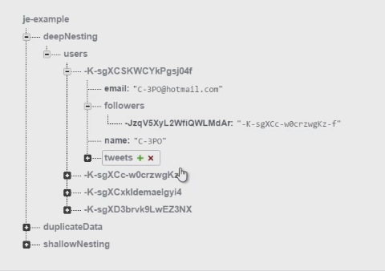
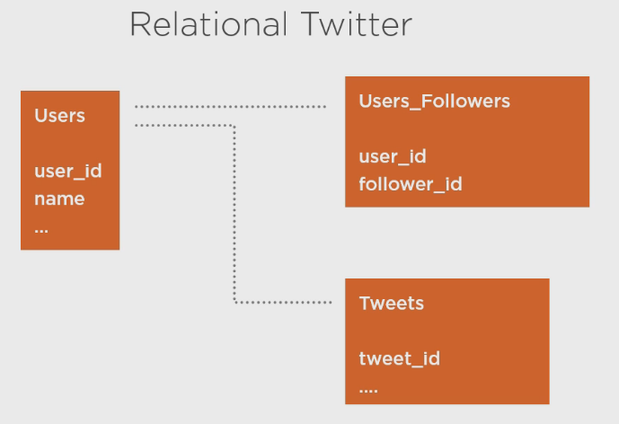

The following courses are from Pluralsight
In order to work with Firebase client, include the following link into your page.
src="https://cdn.firebase.com/js/client/2.4.2/firebase.js"
Before we begin, We will create a JSON which will be imported into our Collection in Firebase
JSON Collection : https://shwethapramodwedding.firebaseio.com/
{
"wedding" : {
"dbName" : "weddingDB",
"date" : "Oct 10th - 14th 2016",
"day" : "Friday",
"venue" : "Zion #341, 13th Cross, 3rd Main Road, Kirloskar Layout, Hesaraghatta Main Road",
"timings" : "11 AM - 12 PM",
"name" : "Wedding Invitation",
"venue" : "New Jersey, USA"
},
"comments":{
"dbName":"commentsDB"
}
}
Accessing a Reference in Firebase is very simple, but very important
NOTE: Firebase does not have the concept of - ARRAYS
NOTE: there is no such thing as FOREIGN KEY in Firebase, Data design is such that the Foreign key is designed to be stored in multiple nodes for accessing.
/*Main Firebase scripts will come here*/
(function($){
var url = "https://shwethapramodwedding.firebaseio.com/";
var weddingRef = new Firebase(url + "wedding/");
var commentsRef = new Firebase(url + "comments/");
}(jQuery));//IIFE jQuery
Referencing the Child, Parent and Root in your Firebase application is as simple as follows:
Using the .child() , .parent() & .root() methods:
/*Main Firebase scripts will come here*/
(function($){
var url = "https://shwethapramodwedding.firebaseio.com/";
var weddingRef = new Firebase(url + "wedding/");
var commentsRef = new Firebase(url + "comments/");
//Referencing Child nodes in Firebase. Use the .child() method
var dbname = commentsRef.child("dbName");
//Referencing the Parent nodes in Firebase. Use the .parent() method
var parentRef = dbname.parent();
//Referencing the Root node in Firebase. Use the .root() method
var baseRef = dbname.root();
}(jQuery));//IIFE jQuery
The following Data design principles must be considered for effective Firebase DB design & management
Avoid Deep Nesting

Duplicate Data in the right place
Design around Data access
We will be creating a fake, Twitter application. Link to the Twitter application is here!
The following shows the simple architecture of a Relational DB in Twitter application
